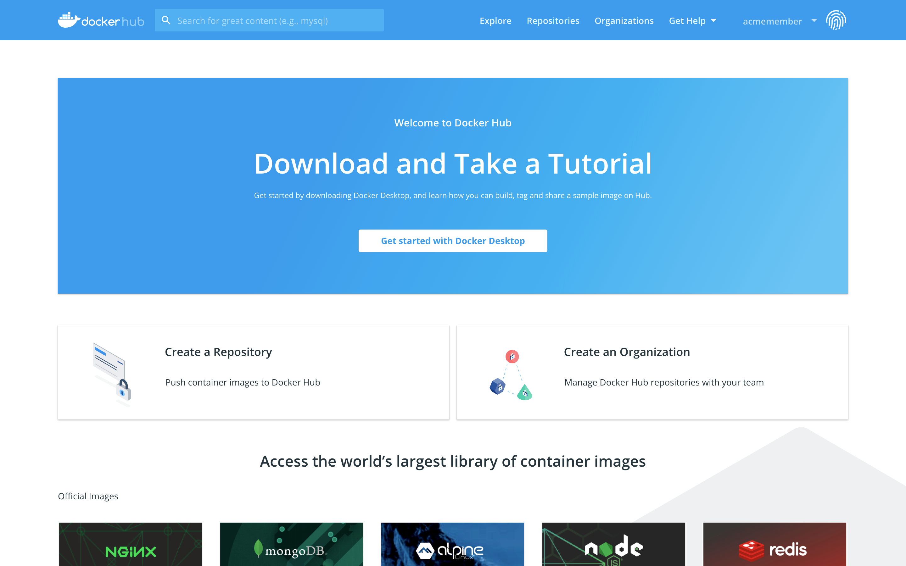

What is Docker?
-
Docker provides tooling and a platform to manage the lifecycle of your containers:
- Develop your application and its supporting components using containers.
- The container becomes the unit for distributing and testing your application.
- When you’re ready, deploy your application into your production environment, as a container. This works the same whether your production environment is a local data center, a cloud provider, or a hybrid of the two.
Docker vs VMs
Docker Benefits
- Portable
- Fast
- Secure
- Open Source
- Lightweight
- Fast Growing Community
Installing Docker
Mac OSX / Windows
Docker Machine https://docs.docker.com/installation/mac/ https://docs.docker.com/installation/windows/
Ubuntu
-
Update the
aptpackage index.$ sudo apt-get update -
Install the latest version of Docker Engine - Community and containerd, or go to the next step to install a specific version:
$ sudo apt-get install docker-ce docker-ce-cli containerd.io
Ubuntu
-
To install a specific version of Docker Engine - Community, list the available versions in the repo, then select and install:
$ apt-cache madison docker-ce docker-ce | 5:18.09.1~3-0~ubuntu-xenial | https://download.docker.com/linux/ubuntu xenial/stable amd64 Packages docker-ce | 5:18.09.0~3-0~ubuntu-xenial | https://download.docker.com/linux/ubuntu xenial/stable amd64 Packages docker-ce | 18.06.1~ce~3-0~ubuntu | https://download.docker.com/linux/ubuntu xenial/stable amd64 Packages docker-ce | 18.06.0~ce~3-0~ubuntu | https://download.docker.com/linux/ubuntu xenial/stable amd64 Packages ... -
Verify that Docker Engine - Community is installed correctly by running the hello-world image.
$ sudo docker run hello-world
Docker architecture

Docker client
The Docker client is the primary way that many Docker users interact with Docker. When you use commands such as docker run, the client sends these commands to dockerd, which carries them out. The docker command uses the Docker API. The Docker client can communicate with more than one daemon.Docker daemon
The Docker daemon listens for Docker API requests and manages Docker objects such as images, containers, networks, and volumes. A daemon can also communicate with other daemons to manage Docker services.Docker registry
A Docker registry stores Docker images. Docker Hub is a public registry that anyone can use, and Docker is configured to look for images on Docker Hub by default. You can even run your own private registry. If you use Docker Datacenter (DDC), it includes Docker Trusted Registry (DTR).-
Docker objects
- Images
- Containers
Images
An image is a read-only template with instructions for creating a Docker container. Often, an image is based on another image, with some additional customization. For example, you may build an image which is based on the ubuntu image, but installs the Apache web server and your application, as well as the configuration details needed to make your application run.Containers
A container is a runnable instance of an image. You can create, start, stop, move, or delete a container using the Docker API or CLI. You can connect a container to one or more networks, attach storage to it, or even create a new image based on its current state.Docker Hub
- Repositories: Push and pull container images.
- Teams & Organizations: Manage access to private repositories of container images.
- Official Images: Pull and use high-quality container images provided by Docker.
- Publisher Images: Pull and use high- quality container images provided by external vendors. Certified images also include support and guarantee compatibility with Docker Enterprise.
- Builds: Automatically build container images from GitHub and Bitbucket and push them to Docker Hub.
- Webhooks: Trigger actions after a successful push to a repository to integrate Docker Hub with other services.
Basic Docker Commands
// General info
man docker // man docker-run
docker help // docker help run
docker info
docker version
docker network ls
// Images
docker images // docker [IMAGE_NAME]
docker pull [IMAGE] // docker push [IMAGE]
// Containers
docker run
docker ps // docker ps -a, docker ps -l
docker stop/start/restart [CONTAINER]
docker stats [CONTAINER]
docker top [CONTAINER]
docker port [CONTAINER]
docker inspect [CONTAINER]
docker inspect -f "{{ .State.StartedAt }}" [CONTAINER]
docker rm [CONTAINER]